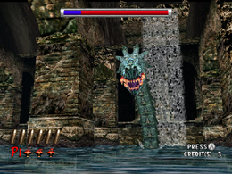
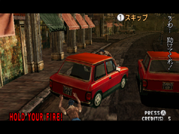
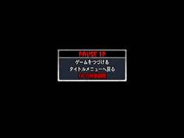

第3章 挫折
HOD2クリアへの道！
まさか、こんなところで力尽きるとは…。
前回からHOD2クリアに励んでいるO君。
コツをつかんだのか、少しずつ先に進めるようになり、遂には
ラストステージの1歩手前、チャプター5まで行けるようになりました。
「このままいけば、HOD2クリアは時間の問題？」
と喜んでいたのもつかの間、
次の日の成績はというと…
チャプター3 ボス戦の途中であっさり終了。
しかも、いつもは楽勝で倒していたゾンビたちから
ありえないくらいダメージを受けちゃっています！

ここで力尽きた…
これは一体どうしたのでしょう？
この間までは、中盤も楽々でクリアしていたO君だったのに…。
しばし考えるワタクシ。
…
…そういえばO君、遊んでいる最中に気になることを言っていたような。
「このルートは、初めて通った気がするなあ」
「このボス、昨日はこんな攻撃してきましたっけ？」
「今日はなんだか、狙いづらい気がするんですよね」
は！！
なるほど、そういうことか！
前回の「リロード」や「街の人」の他にも、
HOD2では気をつけなければいけないポイントがまだあったんだ！
【1】ルート分岐に注意
HOD2では、特定の街の人を助けると、ステージ中のルートが分岐します。
そのため、少し上手くなると、今まで助けられなかった人を助けてしまい、
これまで通っていたルートとは異なる、別のルートを通るようになるのです。
また、このルートにあわせてボス戦の場所や攻撃パターンも分岐します。
つまり、ある程度遊んで自分の得意ルートを見つけたら、
毎回決まった人を助けて、ルートを固定するように心がけると
パターン化でき、攻略も楽になるに違いありません。

ルート分岐のタイミングはたくさん！
【2】いつでもすぐにキャリブレーション
キャリブレーション（照準調整）の設定は、とてもデリケート。
1度キャリブレーションを行っても、遊ぶ場所や姿勢が変わると、
せっかくの設定がずれてしまいます。
①Wiiリモコンを動かしていなくても、画面の照準が細かく揺れている
②自分の感覚とずれて、狙いづらいと感じる
こんな時は、＋ボタンを押してゲームを1度ポーズしてから、
キャリブレーションを行ってみましょう！
ポーズ画面の1番下にある「1Pの照準調整」を選択すれば
ゲーム中でもキャリブレーションを行うことができます。
※2Pで遊んでいる時は「2Pの照準調整」です。

ポーズ画面の1番下を選択！
…いやしかし、
O君がチャプター5まで到達した時は
「このブログ、始まってすぐなのにもう最終回？」
と、ひやひやしたのですが、
大丈夫！もう少しだけ続きます。たぶん。
それにしても、最終回までにO君は本当にHOD2のエンディングを見ることが
できるのでしょうか？
第3回目でまだキャリブレーションとか言っている、このブログは本当に
終わるのでしょうか？
いやその前に、
この解説はちょっとでもみなさんの役に立っているのでしょうか…？
正直、いろいろ不安です…。
～つづく～
 RSS
RSS